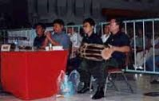

Historique du Muaythaï
La Thaïlande est à 90% Bouddhiste et reste très imprégnée par la religion et les traditions. Par exemples,
les arts visuels Thaïlandais ont été influencé par le Bouddhisme et combinent à la fois des éléments traditionnels et des techniques modernes.
La Thaïlande est réputée dans le monde entier pour son art de vivre. Mais le « pays du sourire » est aussi celui où naquit l’une des plus extraordinaires
techniques de combat: le MUAYTHAÏ

La première mention de cet art martial remonte au XVème siècle,période durant laquelle les champions du royaume du Siam affrontaient dans des joutes épiques leurs rivaux Birmans.
Le Muaythaï demeura longtemps partie intégrante de la formation militaire et fut en quelque sorte l’équivalent du duel dans la tradition occidentale.
Armés de leur seul courage, les hommes se mesuraient sans gants, les mains simplement bandées de coton ou de chanvre.
A la fin du XVIe siècle, le roi Naresuan Le Grand, réputé très bon boxeur,
rendit obligatoire la pratique du Muay Thaï et obligea ses soldats à s'entraîner dans cette discipline.
En 1774, Nai Khanom Tom était célèbre pour ses prouesses lors de batailles contre les armées Birmanes. Il fut capturé par les Birmans lors du pillage de l'ancienne capitale de la Thaïlande, Ayutthaya.
Alors qu'il était prisonnier, Nai Khanom Tom participa à un tournoi organisé par les soldats Birman. Il combattit et vaincu une dizaine des meilleurs guerriers Birmans.
Le roi Mangra de Birmanie, fut le premier à applaudir le vainqueur du tournoi auquel il venait d'assister. Il rendit à Nai Khanom Tom sa liberté et celui-ci rejoignit Ayutthaya où il fut accueilli en héros.
Durant la même période, le roi Pra Chao Seua, surnommé le "Roi Tigre", promu le Muay Thai au rang de sport National. On dit même qu'étant jeune, il participait incognito à des combats.
Pour recevoir une formation, le Nak Muay « combattant » doit avoir un professeur. Parfois, un boxeur peut entraîner un autre boxeur mais la coutume veut que chaque boxeur ait un professeur, et lui témoigne du respect.
Comme de futurs héritiers, le devoir d’un Nak Muay est de jurer allégeance pour supporter les privations et se persévérer pour atteindre le but final : être un champion
Chaque rencontre de Muaythaï est précédée d’un recueillement « Waï Khru » et d’un cérémonial rituel « Ram Muay » soutenu par une musique spécifique.
Le terme « Wai Khru » signifie littéralement « salutation du maître ». Par extension, l’ensemble du cérémonial est devenu le témoignage que marque le Nak Muay à son adversaire, aux juges, arbitres et différents officiels ainsi qu’à l’assistance.
Ce témoignage de respect et de considération, à l’égard des autres et de la société en général, caractérise les qualités morales du Nak Muay.
L’art des traditions Muay impose aux boxeurs d’exécuter le Wai Khru avant chaque compétition.
L’art du Wai Khru doit préparer le cœur du boxeur et son âme à une élévation divine et surnaturelle. Les combattants, coiffés de leur Mongkon, coiffure sacrée permise durant les phases préliminaire du combat : le Wai Khru
Les combattants débutent toujours le combat par une prière et une danse appelée Ram Muay. Le boxeur rend hommage à ses maîtres qui l’ont successivement formé et entraîné pour le combat. Cette reconnaissance du boxeur, s’exprime par son agenouillement sur le ring, le visage tourné vers son entraîneur et récite une courte prière. Il se prosterne à trois reprises : une fois pour son maître, une fois pour Bouddha, une fois pour le roi.
Le Ram Muay commence toujours à genoux et se termine debout. Les mouvements du Ram Muay sont exécutés lentement et circulairement et servent aussi de préparation mentale. Cela ressemble parfois à un combat mimé. A l’époque, chaque école avait son propre Ram Muay. Aujourd’hui on retrouve presque toujours le même : le boxeur commence cette danse en faisant le tour du ring en tenant d’une main la première corde du ring, et en s’arrêtant à chaque coin pour effectuer une prière qui le protègera durant le combat. Ensuite il répète des mouvements de prière dans les quatre directions afin de s’attirer les faveurs de toutes les divinités potentiellement protectrices qui habitent l’imaginaire des Thaïlandais.
Les compétitions de Muay Thaï se déroulaient dans le cadre de festivités locales. Ainsi la musique est une partie intégrante du Muay Thaï et, de ce fait ; le sport est devenu une extension de l’art dramatique Thaïlandais.

Il ne saurait y avoir de combat sans musique : c’est l’accompagnement de la méditation du Ram Muay jusqu’au rythme des assauts pendant le combat.
Le rythme et le volume sonore vont suivre l’action du combat, ils ont un effet stimulant sur les boxeurs.
C'est ainsi que l'art martial des rois devint un sport très populaire. Le peuple avide d'action afflua dans les camps d'entraînement qui se multiplièrent et les premiers paris furent organisés.
Cette évolution progressive vers le sport toucha surtout la pratique (délimitation d'une aire de combat, usage de "bandes" de crin de cheval pour les mains et les avant-bras, coquille) mais peu les techniques de combat elles-mêmes. Le Muay Thaï fit partie de l'éducation des jeunes jusqu'en 1920 mais la fréquence des blessures a contraint les autorités à l'interdire. Il réapparut en 1930 en adoptant les principes de la boxe anglaise : ring, gants, catégories de poids... Le développement du tourisme en Thaïlande le fit découvrir aux Occidentaux.
Le Muaythaï et ses différentes facettes sont véritablement l’art ancestral venu d’Asie que les populations occidentales sont en train de rendre contemporain en l’intégrant quotidiennement dans leur vie.